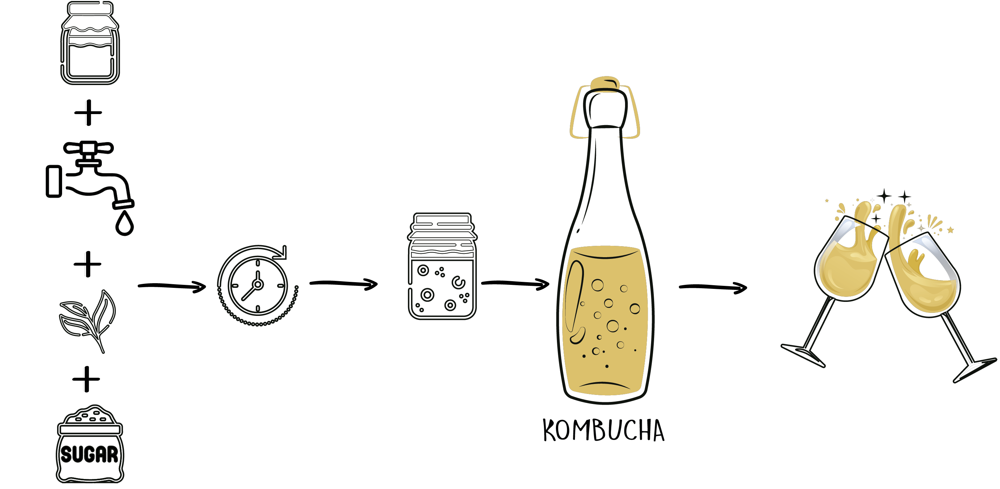

Je m’appelle Ola.
Ce sont mes parents qui m’ont initiée au goût du kombucha ! Et oui, à table nous en avions quasiment tous les jours. Je me souviens encore de cette odeur de thé noir qui embaumait la cuisine et des grands seaux avec cette drôle de crêpe qui surnageait … nous l’appelions “algue” ;-). La frénésie de voir les bouteilles se remplir que l’on mettait tout de suite au frigo. Et ce goût… Les années ont passé et j’ai oublié cette boisson, jusqu’en 2009 où je la retrouve par des amis. Même procédé: échange gratuit de mère ! Tout m’est revenue à ce moment ! Et c’est aussi à cette époque que j’ai décidé de faire de la cuisine mon métier. Et c’est aussi à cette période que j’ai été sensibilisée à une alimentation plus équilibrée, plus saine, moins transformée… un concours de circonstances qui m’ont fait grandir dans ma pratique culinaire jusqu’à aujourd’hui.
Aujourd’hui, après 12 ans à cuisiner des aliments solides, je passe aux aliments liquides avec toujours pour démarche d’avoir un impact sur la santé et le bien-être des gens, sans oublier bien sûr que cela passe d’abord par un accueil gustatif agréable, restes de mon métier !
Mon désir profond est de vous emmener dans cette démarche globale d’une alimentation non seulement bien accueillie en bouche mais surtout bien assimilée par votre corps. Alors continuons ensemble si vous le voulez bien !
A l’Atelier des Bulles, nous sommes fier.Es de nos engagements en faveur du bien-être, de l’environnement et de la santé publique. Nos tisanes sont produites en France et nous les privilégions afin de limiter notre consommation de thés venant de loin. C’est un défi qui transforme la recette traditionnelle, mais cela fait partie de notre passion. Nous n’utilisons ni d’additifs alimentaires, ni de colorants, ni d’édulcorants. Pour l’instant le sucre utilisé est de canne, mais nous passerons vite au sucre de betterave!
Tous nos ingrédients sont biologiques, même si nous n’avons pas encore le label.
Dans une démarche d’activité profondément ancrée dans notre territoire, nous sommes à la recherche de fournisseurs bio de tisanes et de sucre de betterave. Si vous en êtes ou en connaissez, alors contactez-nous !
Enfin, nous veillons à respecter les normes de santé publique les plus strictes pour garantir la sécurité et le bien-être de nos partenaires-clients.
A l’Atelier des Bulles, nos valeurs sont au cœur de tout ce que nous faisons. Nous croyons en l’importance de l’intégrité, de la qualité et du service à la clientèle. Nous nous engageons à offrir des produits de qualité supérieure, fabriqués avec soin et passion. Nous sommes à l’écoute de nos partenaires-clients et nous nous efforçons de répondre à leurs besoins et attentes.
Le kombucha est une boisson fermentée à base de thé sucré et de bactéries et levures bénéfiques. Voici les grandes étapes de sa fabrication :
Voilà une boisson maison légèrement acidulée, pétillante et peu sucrée.
